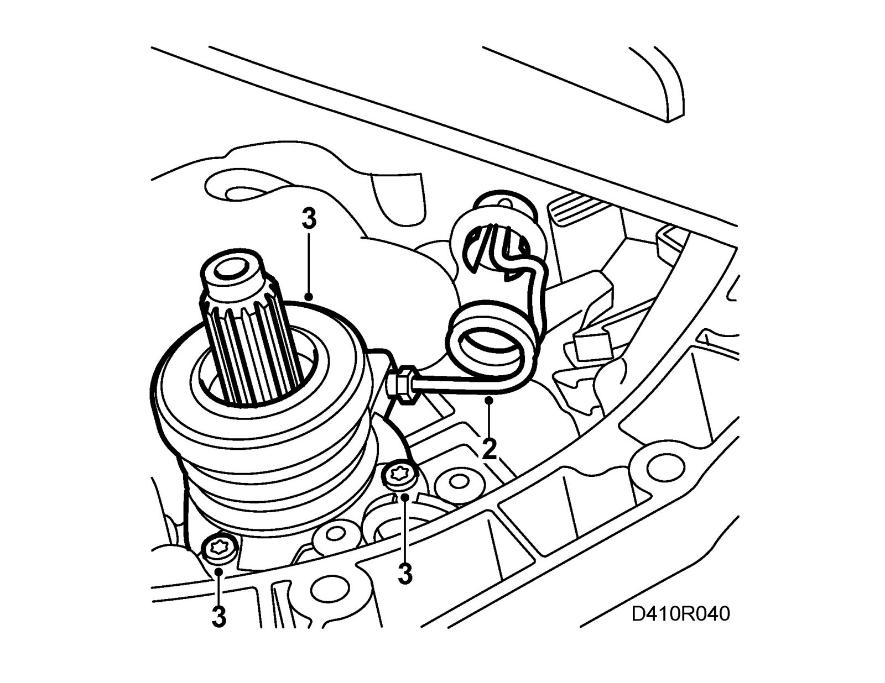
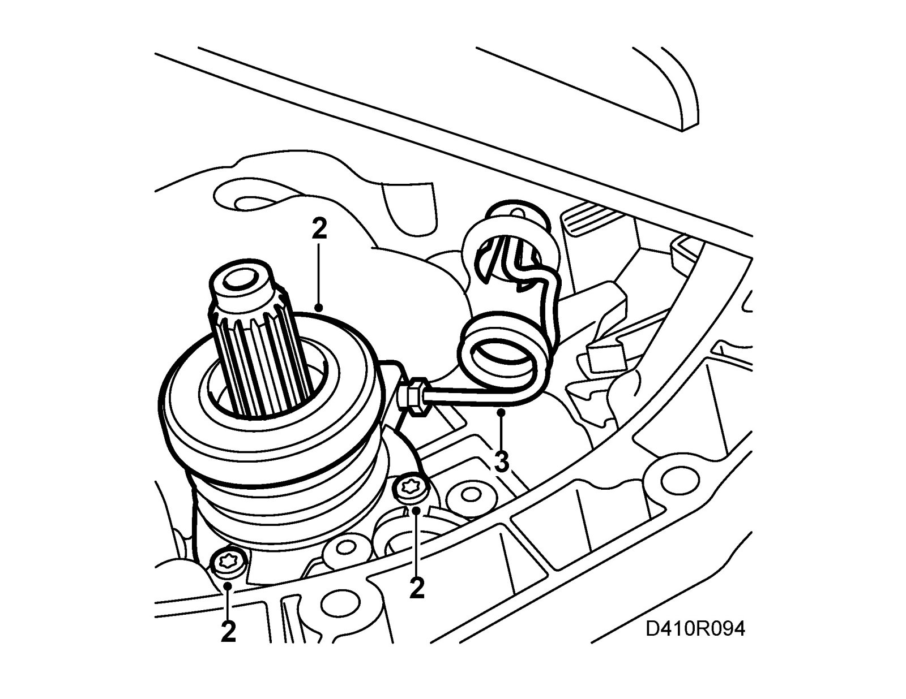

Removal and Replacement
Slave cylinderTo remove
1. Remove the gearbox, see Gearbox assembly man B207 or Gearbox assembly FM68.

2. Detach the delivery pipe.
3. Remove the three retaining bolts for the slave cylinder and pull it out.
To fit

1. Apply 74 96 268 Thread locking adhesive to the retaining bolts, see List of lubricants and sealants.
2. Bolt on the slave cylinder.
Tightening torque 10 Nm (7 lbf ft)
3. Fit the delivery pipe to the slave cylinder.
Tightening torque 22 Nm (16 lbf ft)
4. Bleed the slave cylinder before fitting the gearbox, see Bleeding the slave cylinder. Procedures
5. Fit the gearbox, see Gearbox assembly man B207 or Gearbox assembly.
6. Bleed the clutch. See Bleeding the clutch hydraulic system in the car. Service and Repair